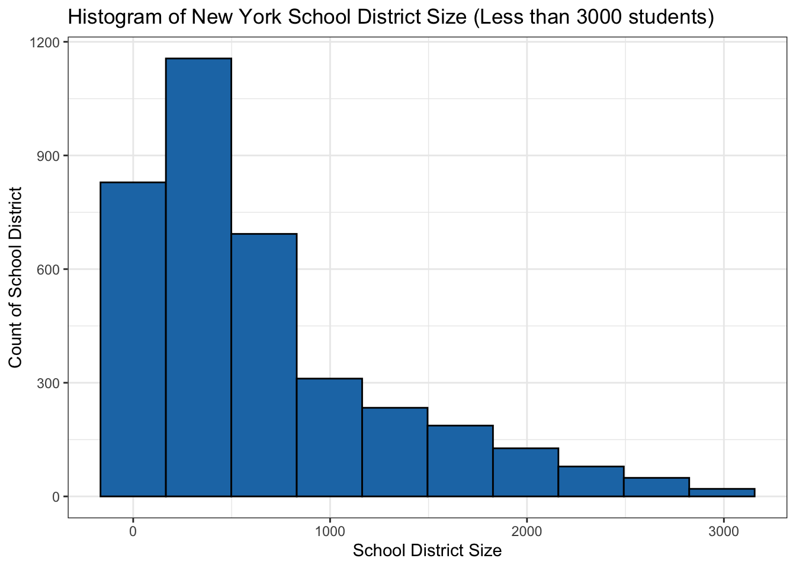
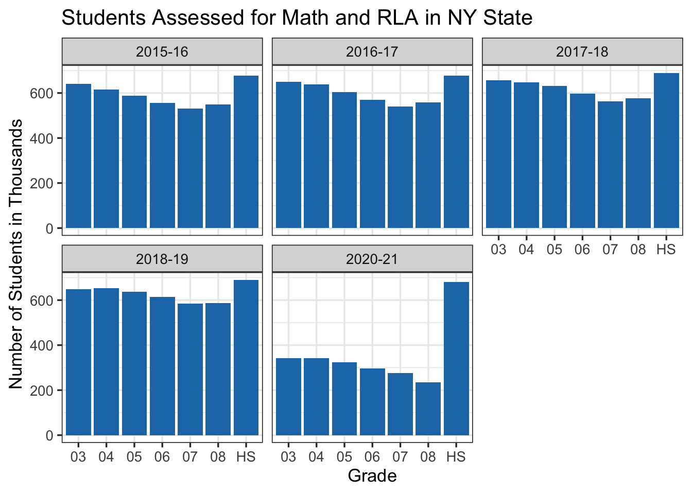
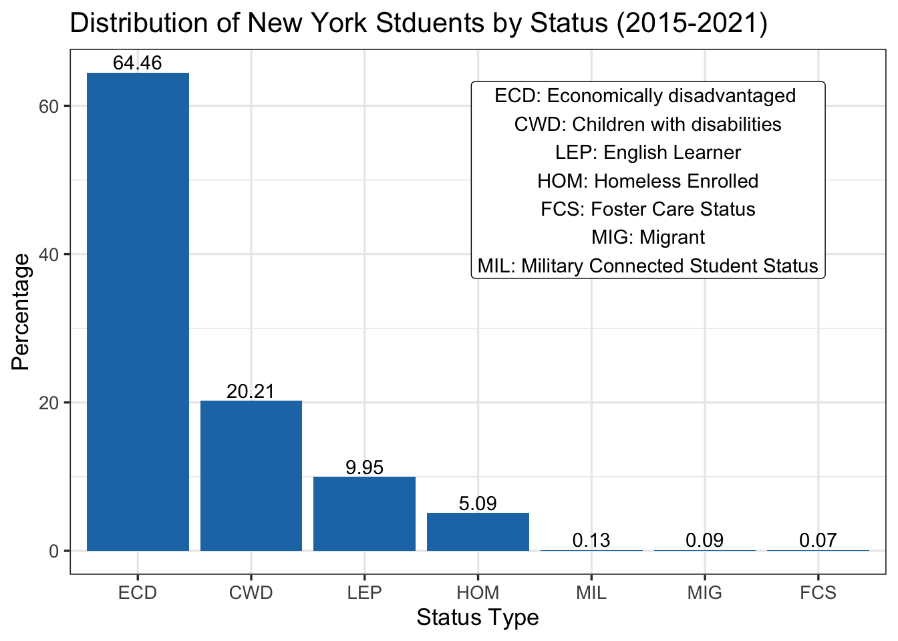
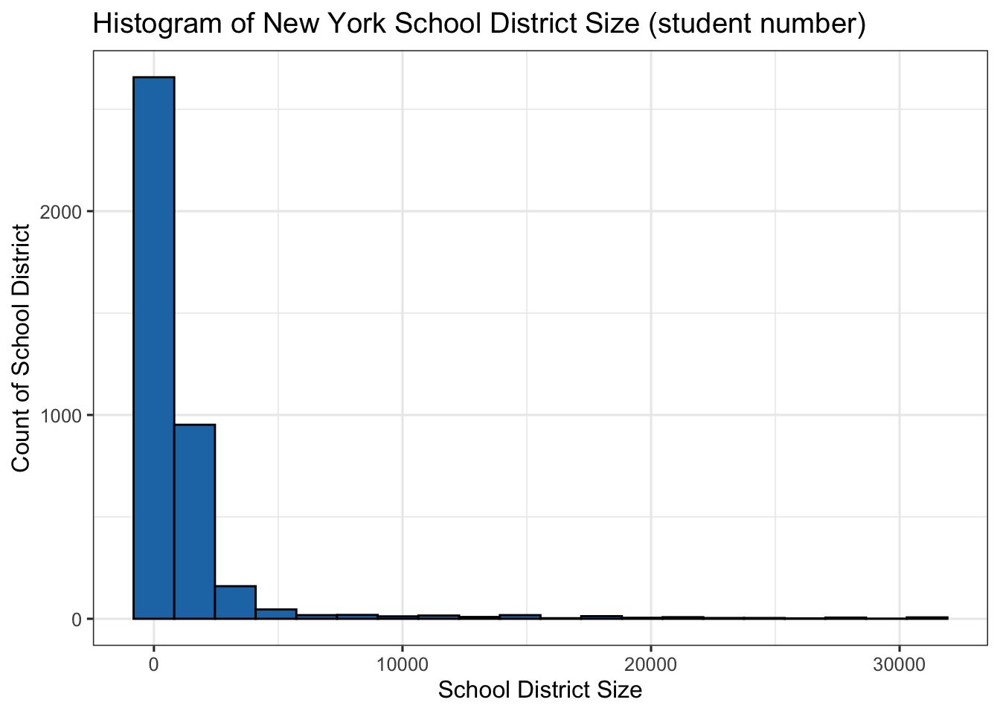
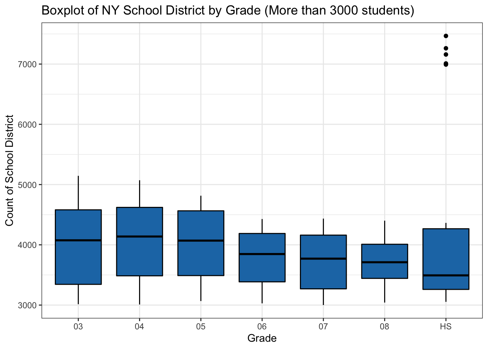

Chapter 4 Results
4.1 Student Demographics
In this section we will explore the reported demographics and population distribution of NY students. We look for any anomalies, highlight trends and point out any consideration we might need to have before moving forward to review proficiency results.

why is there a drop in 2020-21 student count?
The number of reported students for both Math and RLA assessments are relatively steady year over year from 2015-16 to 2018-19 school years, but we observe a sharp drop in 2020-21 school year. Also, we can observe that the data was not reported for the 2020-21 school year. Upon investigating the Department of Education, we have noticed that the reporting requirements were waived for 2020 and were relaxed for 2021 reporting due to the circumstances of COVID-19 pandemic. This is an important consideration when we analyze the latest school year. This is outlined on the US Department of Education website: https://www2.ed.gov/about/inits/ed/edfacts/data-files/index.html

Is 2020-21 school year data underreported for all grades?
We can observe from the chart that in the 2020-21 school year the high school reported numbers are aligned with previous years but the third through eighth grade were significantly underreported compared to the previous years. The reason for this is not totally clear to us but one interesting fact that we will review in the next section is that generally high schools have better ratios of proficiency assessment results. One theory could be that since the results are better the districts have reported these numbers more compared to the other grades. Another interesting demographic observation is that there are almost always less students in seventh and eighth grades compared to other grades. This is another observation that needs to be discussed with a subject matter expert on this topic.
What is the distribution of students with reported special status?
We can observe that almost 65% of the students with special status are from Economically disadvantaged categories. We cannot directly compute what percentage of the whole population of students fall into this category. It’s also not clear if there is any overlap in categories. It’s notable to mention that less than 0.3% of students with special status fall into Foster care, Migrant, or with Military connected status.
What is the distribution of students by who they identified (female / male)?
As expected the distribution is pretty even with slightly more students who identified as male with 52% and 48% who identified as female.

What is the distribution of students by race / ethnicity?
A notable observation is that NY state has a significantly higher ratio of non-white students compared to US national averages. Per government census around 76% of the US population is white while in NY the ratio of white students is 43%.
Source:
https://www.census.gov/quickfacts/fact/table/US/PST045221
4.2 School District Size

What is the distribution of school district size (number of students)?
We can observe that the distribution is skewed positively. Majority of the districts have less than 500 students. From looking into the dataset we can easily observe that many of the districts are located in rural and sparse suburbs while districts with higher than 10K are mostly located in NYC and other bigger cities in the state of New York. To observe the difference in the distribution we have divided our histogram into two separate graphs to see the distribution with more than 3K and less than 3K students.

Is there any notable difference in the district size by grade?
While there isn’t a significant variation in median of district sizes for different grade we see an outlier for High School school districts. This outlier is “NEW YORK CITY GEOGRAPHIC DISTRICT 2”, with more than 7K high school students.
4.3 Proficiency Results


What is the percentage of students proficient in Math / RLA?
The ridgeline graphs suggest that the proficiency percentage in general is relatively stable over the years. There is a concentration of observations around 50% but there are signs of potential bi-modality especially for RLA around 90% over the years. To further investigate this we have also created a ridgeline of proficiency by grades. We can observe from the graph that the performance in High School is significantly better than other grades. The underlying reason for this is unclear for us and requires some input from subject matter experts.
| CATEGORY | CATEGORY_DESC |
|---|---|
| CWD | Children with disabilities |
| ECD | Economically disadvantaged |
| F | Female |
| FCS | Foster Care Status |
| HOM | Homeless Enrolled |
| LEP | English Learner |
| M | Male |
| MAM | American Indian/Alaska Native |
| MAS | Asian/Pacific Islander |
| MBL | Black |
| MHI | Hispanic |
| MIG | Migrant |
| MIL | Military Connected Student Status |
| MTR | Two or More Races |
| MWH | White |
How do students from different status, sex, and background performed in the tests?
The proficiency results based on identified sex suggests that the perfromance of students who identified as female is overall better than male students across all grades and subjects. The difference in Math is relatively smaller but in RLA there is a bigger gap. As observed in the previous part the high school performance is also better than other grades for both female and male students.
The proficiency grouped by race and ethnicity suggests a gap among groups. Asian / Pacific Islander students’ proficiency percent is higher than other groups. The median for White, multiracial and Asian / Pacific is higher than 50% but the rest of the groups lower than 50% meaning that lower than 50% of students were proficient in the assessments. It’s notable to mention that the top 10% of all groups performed relatively the same but the median among different groups are very different. This might suggest an interaction between background and other factors such as higher socioeconomic status. We don’t have the relevant data points to explore this but this is an interesting topic to be explored in the future works.
There is a large gap in the median proficiency percent when it comes to groups with special status. The groups reported here are not really comparable by nature. The main takeaway from the exploration is that students with LEP (English Learner), CWD (Children with Disability), and HOM (Homeless) status have relatively lower proficiency rates (all less than 30% median) and could potentially benefit the most from more resources.

What are the top school districts in the state of NY?
We have used Cleveland dot plots to visualize the top school districts in the state of NY. Since the districts with very high proficiency percentages seem to be all concentrated on the smaller districts we have decided to divide the chart to districts with higher than 3k students and schools with lower than 3k students. There are many districts with lower than 3k students with above 90% proficiency rate. The data suggests that many of these schools are Charter schools and the RLA and Math performance are both very high. The schools with more than 3k students in general have a lower proficiency rate in both Math and RLA. These charts suggest that there is a big gap in performance among different school districts and it seems to be correlated with school district size.

Are Mathematics and Reading / Language Art assessment results correlated?
Looking at the scatterplot of the two assessments we can observe that the results seem to be correlated. The school districts with better Math proficiency ratios usually have better RLA proficiency ratios as well.